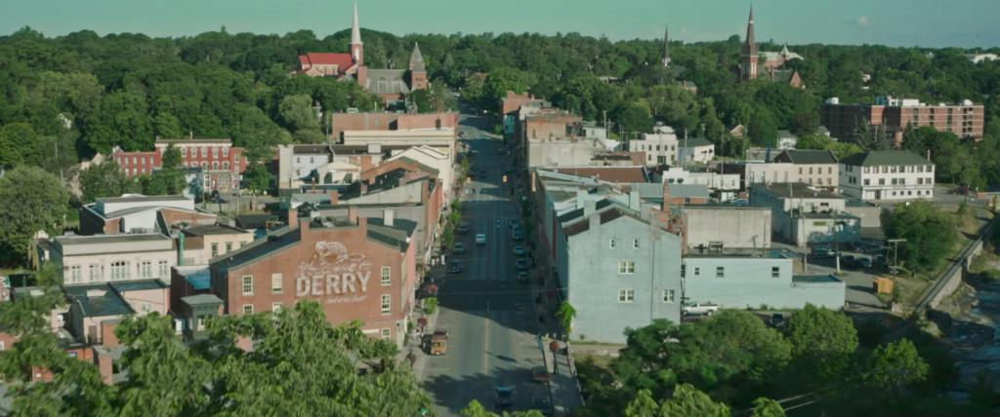
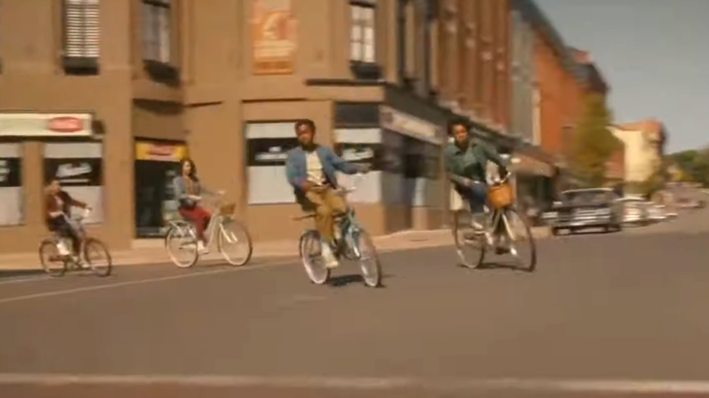

Estados unidos/Maine
El pueblo de derry es reconocido por su
ambiente retro, contando con distintos
edificios que datan del propio siglo XIX.
Esta experiencia es apta para todas las
edades y todas las familias que deseen
experimentar un salto en el tiempo.
Estados unidos/Maine
El pueblo de derry es reconocido por su
ambiente retro,
contando con distintos
edificios que datan del propio siglo XIX.
Esta experiencia es apta para todas las
edades y todas las familias
que deseen
experimentar un salto en el tiempo.
